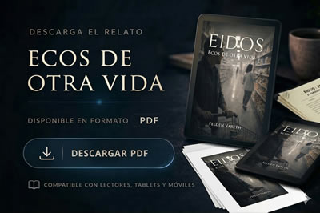

Arián Valtor no buscaba nada aquella tarde. Solo conducir sin rumbo, entrar en un supermercado cualquiera, dejar pasar el tiempo como quien ya no espera nada de él.
Entonces la ve.
Un gesto. Una forma de moverse. Un recuerdo que no debería seguir ahí después de dos siglos.
Maya.
Durante un instante, todo lo que creía cerrado vuelve a abrirse. Como una posibilidad, como una presencia real, cotidiana, a unos pocos metros de distancia.
Pero hay decisiones que no pueden deshacerse. Y vidas que, una vez separadas, ya no vuelven a encontrarse en el mismo lugar.
Este relato explora el peso de una renuncia sostenida en el tiempo, la fragilidad de las decisiones irreversibles y el vértigo de descubrir que el mundo ha seguido adelante sin necesidad de conservar lo que dejamos atrás.
Porque a veces el mayor acto de amor no consiste en quedarse.
Consiste en desaparecer sin alterar la vida de quien sigue viviendo.
Lectura y descarga disponibles próximamente
Ecos de otra vida estará disponible en esta página en cuanto se publique su versión de lectura y descarga. También se añadirá aquí la opción de compra en Amazon.
Lectura y descarga
La versión gratuita en web y PDF se activará próximamente.

En cuanto esté disponible, podrás leerlo aquí y descargar el PDF.
Apoya al autor
La edición de apoyo al autor, puedes reservarla en Amazon.
Comprar en AmazonPuedes reservar ya tu copia en Amazon.